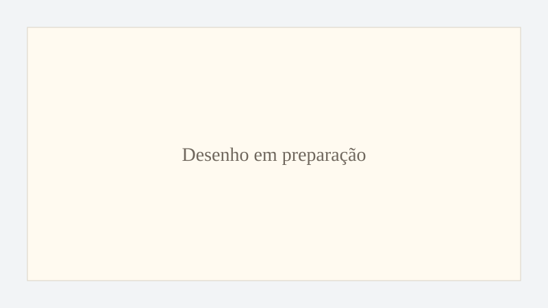

Introdução e Capítulo 1
As novas questões de hoje: inteligência artificial, digitalização, riscos e caminhos de construção comum.
Abrir capítuloArte, Tecnologia e Dignidade Humana
Uma plataforma de estudo sobre a Encíclica, a pessoa humana e os desafios da técnica.
Este projeto reúne leitura, documentação, imagens, cadernos e percursos de estudo sobre a Encíclica Magnifica Humanitas, com atenção especial à Doutrina Social da Igreja, à inteligência artificial, à arte e aos modos de participação social.
Iniciativa laical independente de estudo e pesquisa.
Magnifica Humanitas organiza materiais de estudo, imagens, comentários e percursos de leitura a partir da Encíclica. O site está em desenvolvimento e será ampliado progressivamente com páginas temáticas, desenhos, cadernos e materiais de apoio.

As novas questões de hoje: inteligência artificial, digitalização, riscos e caminhos de construção comum.
Abrir capítulo
Fundamentos e princípios da Doutrina Social da Igreja.
Abrir capítulo
A grandeza da pessoa humana diante das promessas da inteligência artificial.
Abrir capítulo
Verdade, trabalho, liberdade e cuidado do humano na transformação técnica.
Abrir capítulo
Tecnologia, guerra, responsabilidade e civilização do amor.
Abrir capítuloOs materiais visuais serão organizados progressivamente a partir de desenhos, esquemas e composições editadas para o projeto. As imagens aqui apresentadas serão substituídas conforme os arquivos forem preparados.
Princípios para leitura dos desafios contemporâneos.
Imagens, desenhos e composição editorial.
Análise crítica das transformações técnicas.
Formas de colaboração e acompanhamento público.
Materiais para percursos de leitura progressiva.
Receba atualizações sobre novos capítulos, desenhos, cadernos e materiais de estudo.